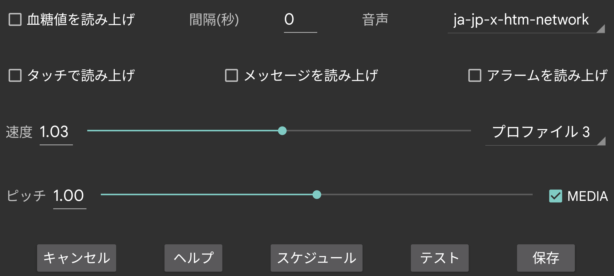

ar be de es fr hi ja nl pl ru tr uk uz zh en
血糖値が到着したときに読み上げます。
間隔(秒): 次の血糖値を読み上げるまで Juggluco が何秒待つかを指定します。血糖値が到着すると常に即座に読み上げられます。大きな値を指定すると、Juggluco はこの時間が経過する前に到着した血糖値を読み飛ばします。
音声: 利用可能な話者の中から話者を選択します。
速度: 数字が大きいほど話す速度が速くなります。
音程: 数字が大きいほど音程が高くなります。
テスト: 最後の血糖値を読み上げます。
一部のスマートフォンでは、音声合成 (Text-to-Speech) の Android 設定を変更しないと動作しません。言語のデータをインストールしたり、設定を変更したりする必要がある場合があります。Samsung スマートフォンでは、複数の音声から選択するために「Samsung text-to-speech engine」ではなく「Google text-to-speech」を設定する必要があります。これらのオプションは Android 設定で text-to-speech を検索するか、言語と入力(→詳細)→音声合成 へ進むと見つかります。ここで「Speech Services by Google」を選択し、音声データをインストールできます。他のスマートフォンでは システム設定 → ユーザー補助 → 視覚 → 音声合成設定 にあります。
音声タッチをオンにすると、特定の場所をタッチすると音声が発生します:
現在の血糖値をタッチ;
グラフの点やスキャンポイントをタッチ;
記録をタッチ;
左上隅と右上隅をタッチすると、グラフのその点の日付が読み上げられる;
メニュー項目を長押し;
記録一覧(左中メニュー → 一覧)の記録を長押し。
画面に一時的に表示されるテキストメッセージや、スキャン結果(エラーメッセージや血糖値)を読み上げます。
低血糖アラームと高血糖アラーム中に血糖値を読み上げます。アラームの開始時とアラームの停止時の両方で読み上げられます。
有効なプロファイルを選択します。デフォルト はデフォルトのプロファイルです。左メニュー → 設定 → アラームと音声のすべての設定は、有効なプロファイル固有のものです。
1 日の特定の時刻にプロファイルを有効にするように Juggluco を設定できます。
音声サウンドの音量は Android 設定の音項目で増減できます。メディアが オフ の場合、私のスマートフォンでは 通知 音量レバーで、私の WearOS ウォッチでは システム 音量レバーでこれを行えます。「サイレント」がオンのときは聞こえないはずです。メディア が設定されている場合、メディア音量レバーが使われ、ほとんどのスマートフォンでは 「サイレント」中にも聞こえます。
アラームを読み上げる は異なります。「アラームをアラームとして扱う」がオンの場合、アラームは「アラーム」カテゴリで読み上げられます。私のスマートフォンでは音量はアラームレバーで、私のウォッチでは通知レバーで調整されます。